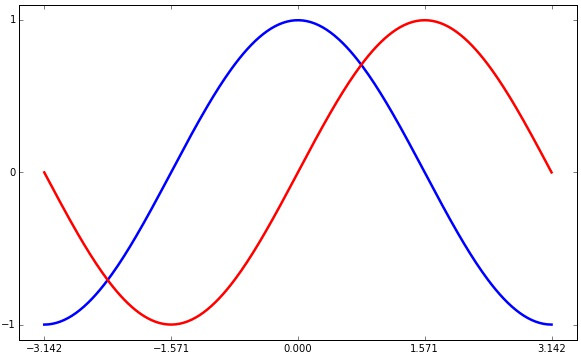
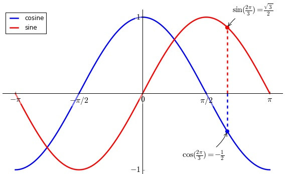

来绘制一幅完美的三角函数图吧！
本文的源代码：点击进入ipy notebook 此文由Cescfangs翻译自:Nicolas P. Rougier的Matplotlib教程,并作出了适当的修改。 原始出处:http://scipy-lectures.github.io/intro/matplotlib/matplotlib.html
快速创建三角函数
|
|
参数修改-绘制完美的三角函数
在第一部分中我们通过Matplotlib和numpy快速创建了一个三角函数图，所采用的参数都是默认的。事实上我们可以通过相关参数（包括线型、颜色、坐标、标题、图示……）的修改使图形满足自己的需求
线宽和颜色
把cosine函数的颜色设置为蓝色，sine则是红色，而且线是不是看起来不够粗？
调整坐标轴
仔细看上面的图，总觉得不舒服，大概是因为两条曲线“顶天立地”的原因吧，要是再多留些空间会更好？试试lim:
坐标刻度改为\(\pi\)更合适
对于三角函数来说，1,2,3这整数值没有多大意义，倒是3.14这种能让人家一看就知道:
 等等，3.14改成\(\pi\)不是更好吗？
坐标轴放在中间更好看吧？
现在的坐标轴位于图象四周唉，而且X,Y的原点分散，感觉上吧坐标轴放在图象中间会更好看一点吧？
喂喂喂！我怎么知道哪条是cosine？
那就加个图例吧:
特殊点注释不可少
在一幅图像中，有些关键的点要是标注出来的话，重点就不言自明了吧？2\(\pi\)/3如何？
最后再修改一些细节
坐标轴上标记的刻度字体太小了吧！而且会被图象挡住唉！
 >不断尝试，找到自己喜欢的风格之后，可以写个小的模块以便于之后引用。
欢迎转载，请注明出处。(๑¯∀¯๑)